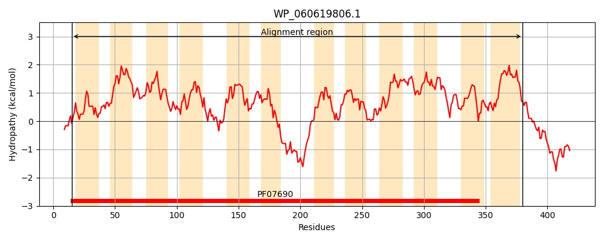
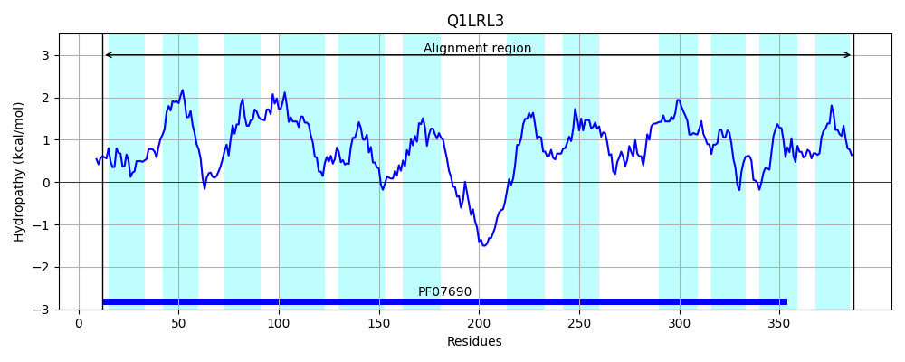
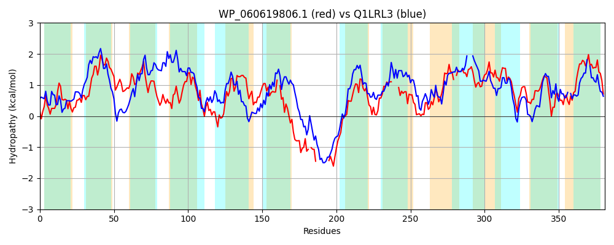

Hit Accession: Q1LRL3
Hit TCID: 2.A.1.70.8
Hit Description: gnl|BL_ORD_ID|13022 gnl|TC-DB|Q1LRL3|2.A.1.70.8 Permease of the Major Facilitator Family OS=Cupriavidus metallidurans (strain ATCC 43123 / DSM 2839 / NBRC 102507 / CH34) OX=266264 GN=arsP PE=4 SV=1
Mach Len: 381
e:0.000000
Query TMS Count : 12
Hit TMS Count: 12
TMS-Overlap Score: 8.950000
Predicted Substrates:None
BLAST Alignment:
Score: 458 , Bit scores: 181 bits, E-value: 1.0e-52, Alignment length: 381, Percentage identity: 33
Query: 15 GGQQLINWGISFYMPGTFAGAIAADKGWSLPQIYLGLTLAMLMMAAVSPFVARLLARFGGRLVVTSGTLLIAASCAMMAWRPSLAGWYGAWLLTGIGMRLSLYDALFAAVVNLYGQQARKTISHITLAGGLASALFWPLGEALLTIMPWQNALRIYALFGL-LSAWLSYQLPRQRLSSPAKS-PASQ--------ATAKGDRRNGARYAIFIALITFISNGTSTHLPEFISHFGLPVA----VGMLWGFGQTGARLGEVLAGPRVTPLTLTRFTALAMPL-CFLLGLSSTAYAGFAAGFVLGYGAINGLVTIVKATLPLALFSAESYASRTGILLIPGQLMAAASPFAYAWLNHRLGIIGGMWVSTGLTLIVAGLALAMVR 380
G Q + WG ++Y+P A +A D G S P I+ ++A+++ A + P R++ R GGR V+ + +L+ A + + G + AW++ GIGM LY+A FA +V LYG ++R I+ ITL G AS + WPL ++ + W+ A +A L L L+ +PR ++ A S P SQ A + R A A FIS + HLP + G +A VG L G Q GAR+ E +V PL R A PL GL A AA F + +GA NG++TI K TLPL +F Y R G+L++P ++ A +P+ + + G +W+S+ L + +A L L VR
Sbjct: 12 GVAQTLAWGSTYYLPAMLATPMAQDLGVSTPTIFAAFSVALVVSALLGPAAGRMIDRTGGRSVLVATSLVFTIGLARLGVAQGVVGLFAAWVILGIGMGAGLYEAAFATLVALYGNRSRGAITGITLIAGFASTVGWPLSTSMEAHIGWRGACLSWAALHLTLGLALNLSIPRVAATATAPSRPTSQTGSALTHHADERSQRTASYALAFVFAATWFISTAMAAHLPRLLQAGGASLATAVMVGALIGPAQVGARILEFGLLRKVHPLLSARIAAALHPLGALAFGLVG---APAAALFGVLHGAGNGILTIAKGTLPLVIFGPGGYGHRQGVLMVPARVAQALAPWIFGMCLDQFG-AKSLWLSSALGM-MAILTLMAVR 387 | Protein Hydropathy Plots: |
|---|
|  |  |
Pairwise Alignment-Hydropathy Plot:
|
|---|
|  |